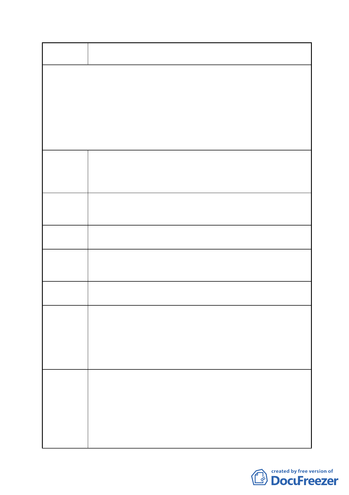

案 名 擬定臺北市南港區鐵路地下化沿線土地細部計畫案
F 區塊須留設南北向 8 公尺帶狀式開放空間，並無準確之位
陳情理由 5
置指定；又未來經市地重劃後，地主分配土地位置與結果尚不
得而知，恐造成未來建築開發時指定 8 公尺帶狀式開放空間之
困擾。
未來市地重劃配地階段應考量該帶狀式開放空間留設位置
建議辦法 5 之合理性以作為地界線之調整依據，避免破壞僑泰興麵粉廠配
地後基地之完整性或類似畸零土地難以利用之情形。
本公司南側 585-3 地號之土地，是否變更為道路用地，並納
陳情理由 6 入本次市地重劃範圍？
585-3 地號原為未徵收之交通用地，建議應納入本次細部計
建議辦法 6 劃道路用地之範圍，並納入未來市地重劃範圍，一併解決長年
來未徵收之公共設施用地問題。
F 區塊之公園用地原為本公司基地之一部份，又本公司為該
陳情理由 7 區塊最大地主，希望保留祖先留下來的土地之完整性
1.未來市地重劃後，依照地主配回之土地應以原位置分配為原
則，本公司未來分配領回之土地應以緊臨 0.5 公頃公園並鄰
建議辦法 7
接南港路與 20 米新生道路為原則。
2.依市地重劃辦法地主領回土地扣除公共設施用地與抵費地
後，不得低於 55%，因此，未來辦理市地重劃時，除公共利
益與公平性，更應考量地主權益，酌予提高配地領回之比例。
1.本案陳情地點位於編號 FR-1 之工業區土地，經內政部審定
之主要計畫規定以更新方式開發，並原則同意變更為商業
市府回應
說明
區，惟應俟實施者擬具更新事業計畫草案辦理公開展覽後，
再報由內政部逕予核定。另為促進該區未來開發，已於本案
主要計畫劃定為更新地區，故該地區可以自辦更新方式開
發，適用都市更新相關容積獎勵
2.有關建議適用「臺北市建築物增設室內公共停車空間鼓勵要
- 32 -